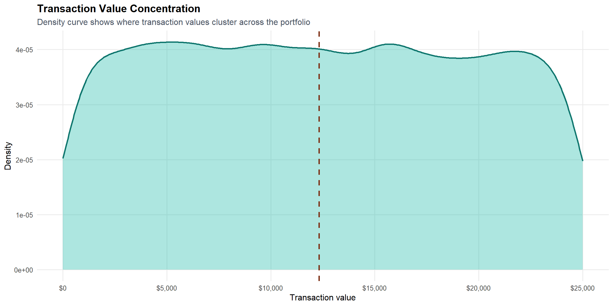
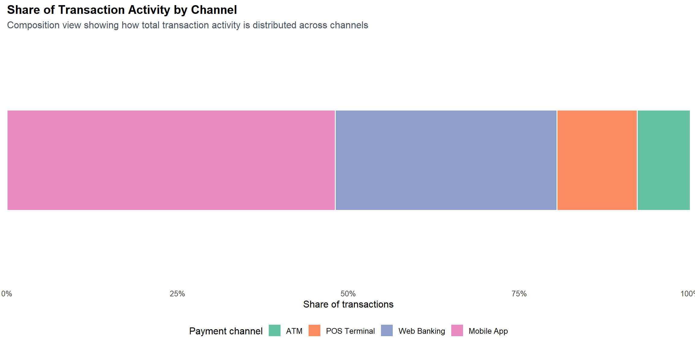
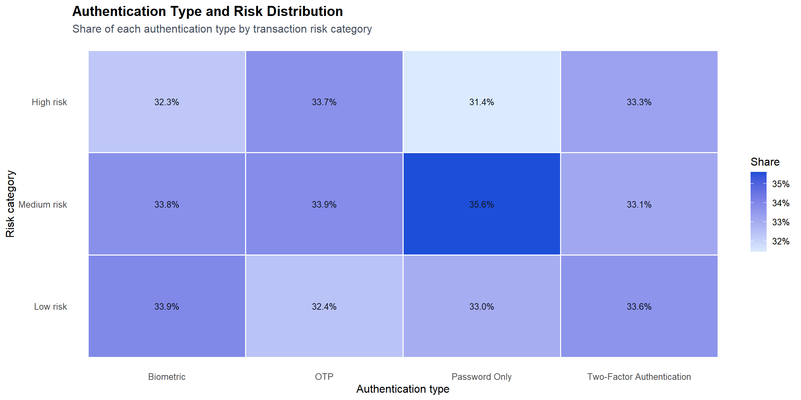
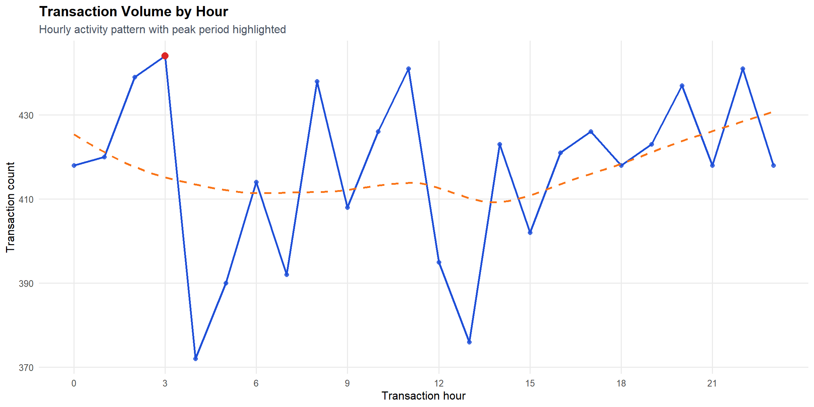
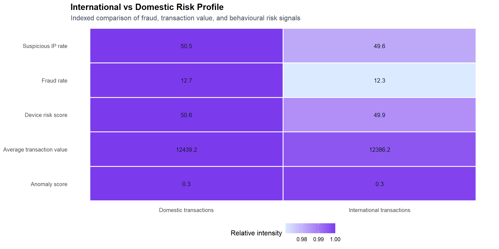
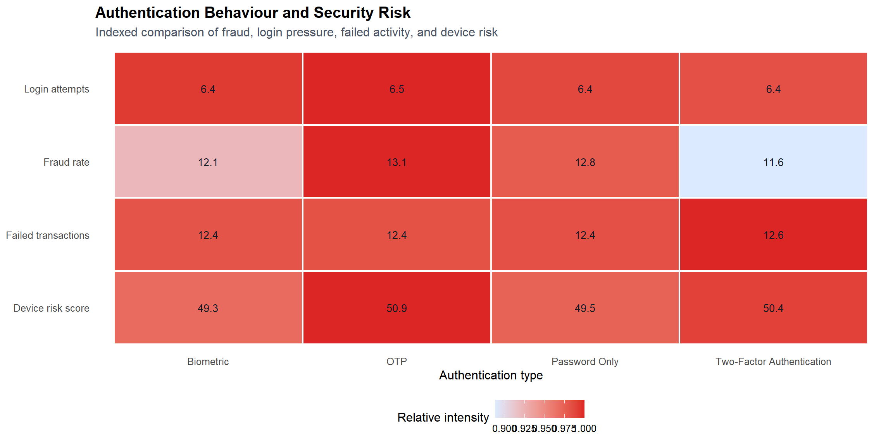
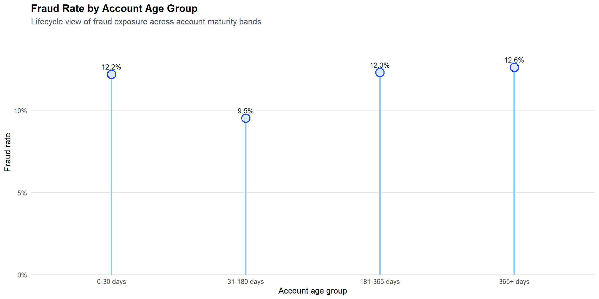
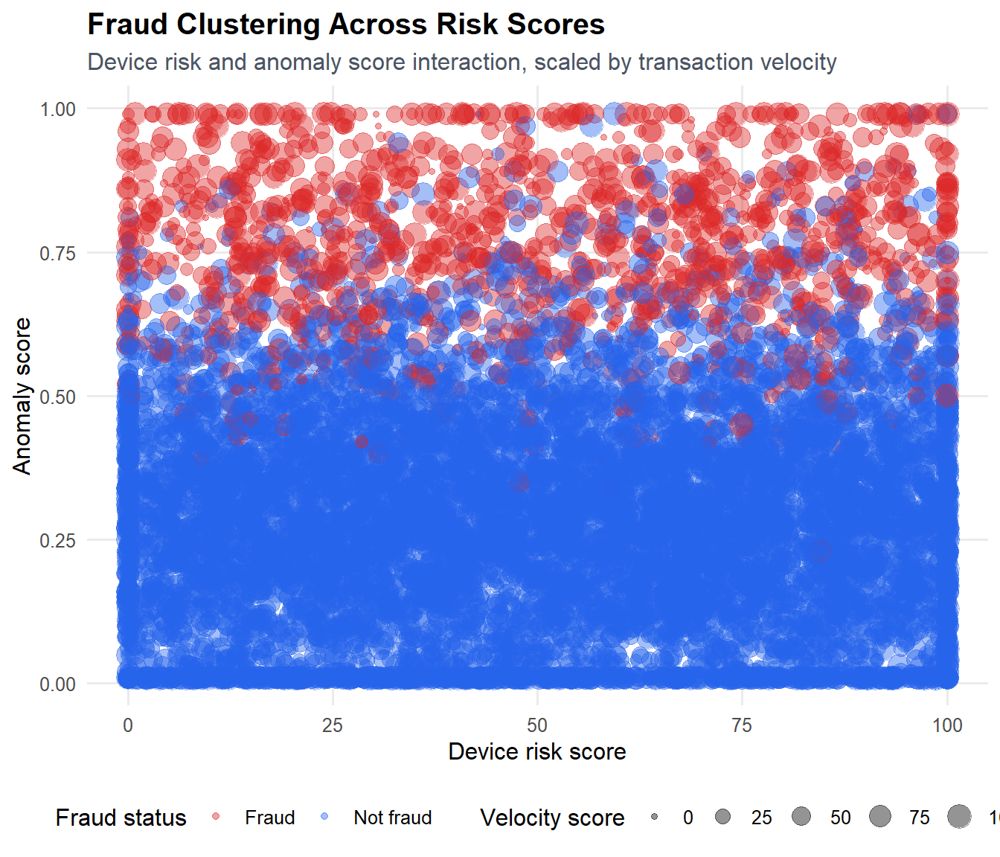

Banking Fraud Behaviour and Risk Analysis Report
Executive Summary
This project analyses banking transaction behaviour to identify patterns associated with fraud risk, authentication behaviour, account maturity, and transaction monitoring signals.
Key Findings
- International transactions exhibit stronger risk indicators than domestic transactions.
- Authentication behaviour influences fraud exposure across customer journeys.
- Newer accounts demonstrate elevated fraud risk compared with mature accounts.
- Fraud is most strongly associated with combinations of behavioural risk indicators.
Business Impact
These findings can support fraud monitoring, authentication strategy, transaction oversight, and customer risk management initiatives.
Dataset Overview
About the Dataset
This dataset contains transaction-level banking activity including transaction amounts, payment channels, authentication methods, fraud indicators, account characteristics, and behavioural risk signals.
Business Context
Transaction monitoring is a core capability in modern banking because fraud risk can emerge quickly, across multiple channels, and through increasingly complex customer behaviours. Banks must identify suspicious activity early enough to prevent financial loss, protect customers, and meet risk management expectations, while still allowing legitimate transactions to move through the system with minimal friction.
Dataset Scope
| Area | Summary |
|---|---|
| Industry | Retail banking and digital transaction monitoring |
| Analytical focus | Fraud risk, transaction behaviour, authentication patterns, and operational monitoring signals |
| Unit of analysis | Individual banking transaction |
| Observational level | Transaction-level activity with associated behavioural, security, and risk attributes |
| Type of data available | Transaction values, payment channels, account maturity, authentication behaviour, risk scores, fraud indicators, geographic context, and activity timing |
Business Case-study
Introduction
This analysis is structured around key business questions designed to understand transaction behaviour, operational activity patterns, fraud risk signals, authentication behaviour, customer lifecycle risk, and interaction effects between behavioural and fraud indicators. Together, these questions frame the project as a banking fraud and transaction monitoring use case focused on identifying where risk may emerge and how monitoring strategies can be better aligned to customer activity.
Business Questions
Theme 1: Customer Transaction Behaviour
These questions establish the baseline for understanding how customers transact and which behaviours represent normal transaction activity across the banking portfolio.
How are transaction amounts distributed across the bank’s transaction portfolio, and what does normal customer spending behaviour look like?
Which payment channels are used most frequently, and how is transaction activity distributed across channels?
Theme 2: Operational Activity Patterns
These questions focus on how transaction activity changes across risk levels and time periods, helping identify when operational teams may need stronger monitoring coverage or review capacity.
How does authentication behaviour influence transaction risk?
When does transaction activity occur, and are there periods of elevated operational or fraud risk?
Theme 3: Fraud Exposure & Contextual Risk
These questions examine contextual drivers of fraud exposure, including transaction geography, authentication behaviour, and account maturity.
Do international transactions exhibit different behavioural and fraud patterns compared with domestic transactions?
How does authentication behaviour influence fraud exposure and security risk?
How does account maturity influence customer behaviour and fraud risk?
Theme 4: Fraud Interaction Patterns
This question brings together multiple behavioural and risk indicators to understand whether fraud risk is strongest when signals occur in combination.
- Which combinations of customer behaviours and risk indicators are most strongly associated with fraudulent transactions?
Analysis 1: Transaction Value Behaviour
Business Question
How are transaction amounts distributed across the bank’s transaction portfolio, and what does normal customer spending behaviour look like?
Key Findings
Transaction amounts are spread across the observed value range, with a visible central concentration of routine activity.
Higher-value transactions are present, but the distribution does not suggest an extreme long-tail pattern.
The median marker provides a useful reference point for distinguishing below-median and above-median transaction behaviour.
Insights
Normal transaction behaviour is represented by the main concentration of transaction values, where most customer activity occurs. Unusual behaviour begins where transactions move away from this central range into the higher-value tail, especially when those transactions are combined with other risk signals.
For fraud detection systems, this means transaction value should be used as a contextual risk signal rather than a standalone trigger. Higher-value activity may not be fraudulent on its own, but it can materially increase exposure when paired with suspicious behaviour, abnormal device signals, or unusual transaction context.
Analysis 2: Payment Channel Usage
Business Question
Which payment channels are used most frequently, and how is transaction activity distributed across channels?

Key Findings
Transaction activity is distributed across multiple payment channels, showing that customers use a mix of banking access points.
The composition view makes it clear whether a small number of channels account for a larger share of overall activity.
Channel concentration has operational significance because higher-share channels are likely to carry more service demand and monitoring volume.
The spread across channels provides a useful lens for understanding digital versus traditional banking behaviour.
Insights
Payment channel usage reveals where customer activity is concentrated across the bank’s transaction ecosystem. Channels with larger shares represent the main pathways through which customers interact with banking services and therefore carry greater operational visibility and monitoring importance.
For fraud monitoring, channel behaviour should be interpreted as a context signal. A transaction’s channel can influence how suspicious activity is assessed, because digital, card-based, and in-person contexts may involve different customer behaviours, authentication expectations, and fraud exposure patterns.
Analysis 3: Transaction Risk Behaviour by Authentication
Business Question
How does authentication behaviour influence transaction risk?

Key Findings
The heatmap shows whether risk is evenly distributed across authentication journeys or concentrated in specific combinations.
Higher-risk areas are visually distinguishable through stronger colour intensity, making risk concentration easier to identify.
Authentication behaviour provides a meaningful behavioural lens for interpreting transaction risk beyond transaction value alone.
If one authentication pathway shows a larger share of higher-risk activity, it indicates clearer separation between customer journeys.
If risk shares appear similar across authentication pathways, the risk signal may be less dependent on authentication behaviour alone.
Insights
This analysis shows whether transaction risk is meaningfully associated with authentication behaviour or whether risk signals appear broadly distributed across customer journeys. In banking terms, strong clustering would suggest that certain authentication contexts carry more elevated risk, while a flatter pattern would indicate that risk is more diffuse and may require additional behavioural signals to interpret effectively.
The visual supports a multi-factor view of fraud detection: risk indicators are most useful when assessed alongside customer behaviour and security context, rather than treated as isolated scores.
Analysis 4: Transaction Activity Over Time
Business Question
When does transaction activity occur, and are there periods of elevated operational or fraud risk?

Key Findings
Transaction activity varies across the day, indicating that operational workload is not evenly distributed.
The highlighted peak shows the hour where transaction volume is highest and operational monitoring pressure may be greatest.
Lower-volume windows are visible, providing contrast against periods of elevated activity.
The smoothed trend helps distinguish broader activity patterns from individual hourly fluctuations.
Insights
Temporal transaction patterns show when banking systems and monitoring teams are most likely to experience higher workload. During peak transaction periods, fraud alerts may be more difficult to review quickly because legitimate transaction volume is also higher.
In banking terms, timing is an important operational risk signal. Fraud monitoring effectiveness depends not only on detecting suspicious transactions, but also on having enough visibility and review capacity during the periods when transaction activity is most concentrated.
Analysis 5: International Transaction Risk
Business Question
Do international transactions exhibit different behavioural and fraud patterns compared with domestic transactions?

Key Findings
The heatmap clearly separates domestic and international transaction profiles across fraud, value, and behavioural risk measures.
Stronger colour intensity indicates where one transaction type carries higher relative exposure for a given risk measure.
Differences across fraud rate, anomaly behaviour, suspicious access, and transaction value reveal whether cross-border activity behaves differently from domestic activity.
If international transactions show consistently stronger intensity across risk measures, cross-border activity represents a distinct risk context.
If the intensity is mixed, transaction type alone is not enough to explain fraud exposure and must be interpreted alongside other behavioural signals.
Insights
The comparison shows whether international activity has a meaningfully different risk profile from domestic activity. In banking terms, stronger international intensity across fraud and behavioural risk measures would indicate that geography and cross-border context are important fraud risk signals.
This section does not imply that all international activity is suspicious. Rather, it shows whether transaction type changes the risk context and whether fraud detection logic benefits from considering geographic and behavioural differences together.
Analysis 6: Authentication and Security Risk
Business Question
How does authentication behaviour influence fraud exposure and security risk?

Key Findings
The heatmap shows whether security risk signals are concentrated in specific authentication methods or distributed more evenly.
Stronger colour intensity highlights authentication journeys with relatively higher fraud exposure, login pressure, failed activity, or device risk.
Comparing multiple security signals together helps identify whether a method appears consistently higher risk or only elevated on one dimension.
Authentication patterns provide a useful lens for evaluating whether security behaviour aligns with fraud exposure.
Insights
Authentication behaviour is a meaningful fraud risk context when certain methods show stronger intensity across security signals. In banking terms, this can indicate that some authentication journeys are more exposed to compromised-account behaviour, repeated access attempts, or higher device risk.
The business interpretation is not that one authentication method is automatically weak. Rather, authentication should be assessed alongside fraud outcomes and behavioural stress signals to understand where security controls appear effective and where customer journeys may carry more risk.
Analysis 7: Account Lifecycle Risk
Business Question
How does account maturity influence customer behaviour and fraud risk?

Key Findings
Fraud exposure can be compared across clear lifecycle stages, from early account tenure through mature accounts.
The visual shows whether newer accounts have visibly higher fraud rates than longer-tenured accounts.
Differences between account age groups indicate whether fraud risk changes as customer behaviour becomes more established.
If fraud rates decline across later lifecycle stages, this suggests account maturity is associated with more stable behaviour.
If risk remains elevated across multiple stages, account age alone may not be sufficient to separate lower-risk and higher-risk activity.
Insights
Account maturity provides important context for understanding customer behaviour and fraud risk. In banking terms, early account stages may carry greater uncertainty because there is less behavioural history available to validate whether activity is normal.
The pattern across account age groups helps explain whether trust appears to strengthen over time or whether fraud exposure remains consistent across the lifecycle. This supports a lifecycle-aware view of fraud detection, where account maturity is considered alongside transaction behaviour and risk signals.
Analysis 8: Fraud Interaction Patterns
Business Question
Which combinations of customer behaviours and risk indicators are most strongly associated with fraudulent transactions?

Key Findings
The scatter plot shows how fraudulent and non-fraudulent transactions are distributed across multiple risk dimensions.
Fraudulent activity can be assessed by whether it clusters in higher-risk areas rather than appearing randomly across the portfolio.
Separation between fraud and non-fraud observations indicates whether combined risk indicators provide a meaningful fraud signal.
Concentration in high-risk regions suggests that elevated fraud exposure is associated with interaction effects between behavioural indicators.
Overlap between fraudulent and non-fraudulent observations shows where fraud detection remains more challenging and where risk signals may be less definitive.
Insights
The scatter plot helps show whether fraud accumulates in specific risk regions rather than being evenly distributed across all transaction behaviour. In banking terms, this means the most meaningful fraud signals often emerge when several indicators are viewed together.
A typical high-risk transaction profile appears where fraud observations cluster alongside elevated behavioural and risk signals. This interaction-based view is valuable because it reflects how modern fraud monitoring works in practice: suspicious activity is often identified through combinations of unusual behaviour, rather than one standalone metric.
Final Recommendations
1. Strengthen Risk-Based Transaction Monitoring
Supporting Evidence
Transaction value behaviour shows that the portfolio contains a normal transaction range alongside higher-value activity that may require closer monitoring. The transaction risk analysis and fraud interaction analysis also indicate that fraud risk is more meaningful when transaction value is considered alongside device risk, anomaly behaviour, and transaction velocity.
Expected Business Benefit
A stronger risk-based monitoring approach can help fraud teams prioritise transactions that combine unusual value patterns with elevated behavioural risk. This improves monitoring efficiency, reduces manual review noise, and supports faster identification of genuinely suspicious activity.
2. Prioritise High-Risk Behavioural Combinations
Supporting Evidence
The fraud interaction analysis shows that fraudulent transactions are best understood through combinations of risk indicators rather than single signals in isolation. The transaction risk behaviour section reinforces this by showing how fraud and non-fraud activity can separate across multiple risk dimensions.
Expected Business Benefit
Prioritising multi-indicator risk profiles can improve fraud detection accuracy and help teams focus on the transactions most likely to require investigation. This supports better use of analyst capacity and reduces reliance on broad rules that may generate unnecessary customer friction.
3. Apply Differentiated Oversight for International Transactions
Supporting Evidence
The international versus domestic risk analysis indicates that cross-border activity should be evaluated separately from domestic behaviour because international transactions may show different fraud, anomaly, device, and geographic risk patterns.
Expected Business Benefit
Differentiated oversight can help risk teams manage cross-border fraud exposure more effectively while avoiding one-size-fits-all controls. This supports stronger fraud prevention, more precise monitoring, and improved protection for customers making legitimate international transactions.
4. Review Authentication Journeys Through a Fraud Risk Lens
Supporting Evidence
The authentication behaviour analysis highlights that authentication type, login behaviour, failed transaction history, and device risk can provide important security context. These patterns suggest that authentication performance should be assessed not only by completion rates, but also by its relationship with fraud exposure.
Expected Business Benefit
Reviewing authentication journeys through a risk lens can help balance customer experience with account security. Better alignment between authentication controls and fraud risk can reduce unnecessary friction for lower-risk customers while increasing scrutiny where behavioural signals are more concerning.
5. Increase Monitoring Focus on Early Account Lifecycle Risk
Supporting Evidence
The account age and lifecycle analysis shows that account maturity provides useful context for fraud risk assessment. Newer accounts may behave differently from mature accounts, and lifecycle patterns can help explain where uncertainty or elevated fraud exposure may be more concentrated.
Expected Business Benefit
Lifecycle-aware monitoring can improve onboarding risk management and help customer security teams identify early warning signs before risky behaviour becomes more costly. It also supports a more tailored approach to customer protection as account relationships mature.
6. Align Operational Coverage With Activity Patterns and Channel Usage
Supporting Evidence
Payment channel analysis shows how customer activity is distributed across banking channels, while the time-based analysis highlights when transaction activity is more concentrated. Together, these findings provide a practical view of where and when operational pressure is likely to occur.
Expected Business Benefit
Aligning monitoring coverage with channel and time-based activity patterns can improve operational readiness, staffing decisions, and alert response capacity. This helps fraud and operations teams maintain service quality during peak periods while ensuring higher-risk activity receives timely attention.
Conclusion
Summary
This report shows that banking fraud risk is best understood through the combined view of transaction behaviour, customer interaction patterns, authentication signals, account maturity, and contextual risk factors. Transaction values provide a baseline for identifying normal and unusual activity, while payment channel usage and time-based behaviour help explain where operational pressure and monitoring needs may be concentrated.
Across the analysis, risk appears most meaningful when behavioural indicators are assessed together. International context, authentication behaviour, account age, device risk, anomaly signals, and transaction velocity each contribute part of the risk picture. When combined, these signals provide a more complete understanding of how fraud exposure may develop across the transaction portfolio.
Overall Takeaway
The central business message is that fraud detection should be behaviour-driven rather than dependent on single indicators. No one measure is sufficient on its own to explain fraud exposure. A stronger fraud monitoring strategy comes from combining transaction value patterns, customer behaviour, authentication context, account lifecycle stage, and risk indicators into a broader view of suspicious activity.
This integrated approach helps distinguish routine customer behaviour from transactions that may require closer attention. It also supports a better balance between fraud prevention, operational efficiency, and customer experience.
Next Steps
Develop predictive fraud modelling to estimate the likelihood of fraud using multiple behavioural and risk indicators together.
Build customer and transaction segmentation to identify distinct groups of normal, unusual, and high-risk behaviour.
Explore real-time risk scoring to support faster alert prioritisation and more responsive fraud monitoring.
Expand behavioural anomaly detection to identify transactions that deviate from expected customer or account-level patterns.
Optimise transaction monitoring rules using insights from channel usage, activity timing, account lifecycle, and fraud interaction patterns.
Closing Statement
Data-driven fraud analytics provides banks with a clearer understanding of where risk is concentrated and how suspicious behaviour develops. By combining transaction monitoring with behavioural, authentication, lifecycle, and contextual risk signals, financial institutions can improve fraud detection, strengthen operational effectiveness, and protect customer trust.